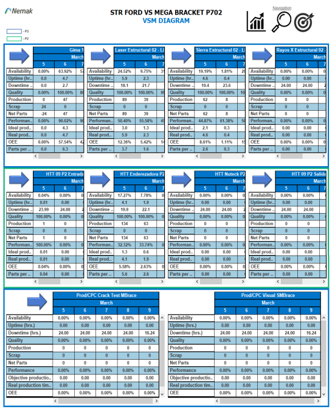

INVESTIGACION Y DESARROLLO DE PROPUESTAS DE MEJORA
Advanced Digital Production Mapping (VSM)
El proyecto denominado Advanced Digital Production Mapping (VSM) consiste en utilizar una Red Noris con datos y capacidades en tiempo real para crear una solución informática avanzada para el cliente y detectar los cuellos de botella de la producción a través de un software existente. En este proyecto, trabajaremos con Nemak. Nemak es una empresa que tiene su sede en García N.L, México, se dedican principalmente a las partes automotrices como estructura de vehículos, tren motriz, y componentes de E-Mobility, con presencia en todo el mundo, teniendo varios clientes como Audi, Ford, Nissan, etc.



Contacto
Susan Vacas Moncayo A00823338@tec.mx